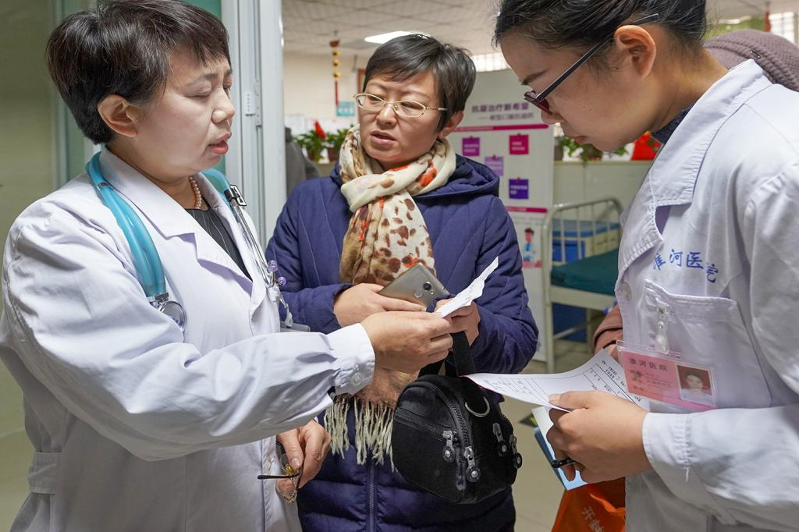
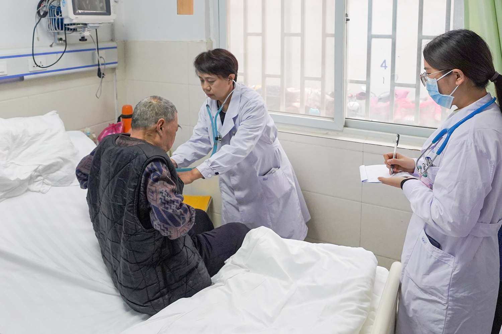
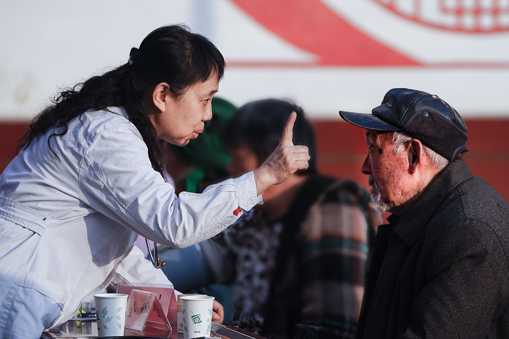
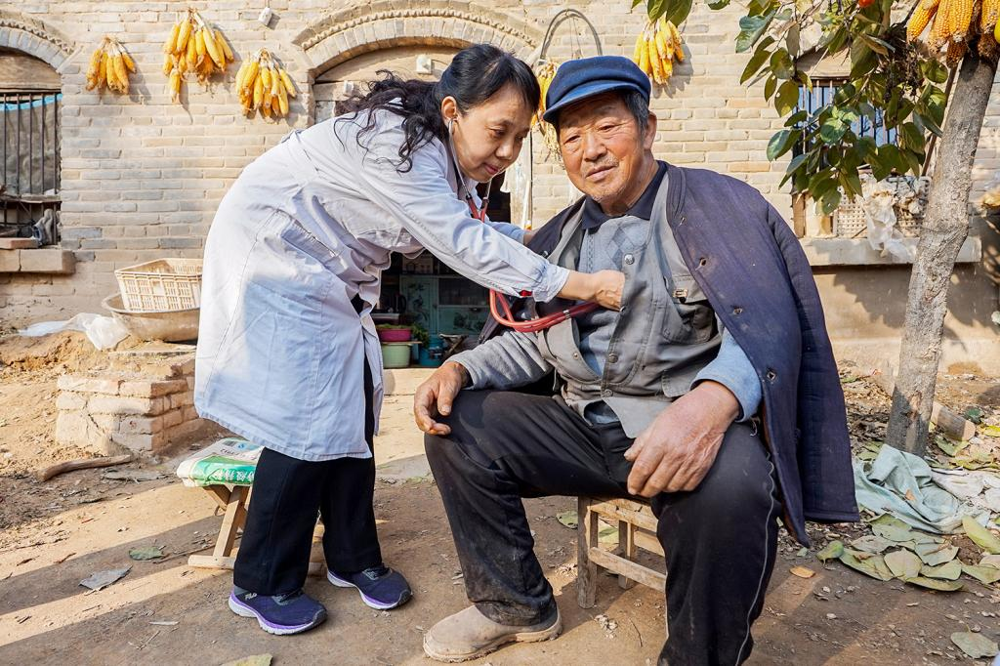
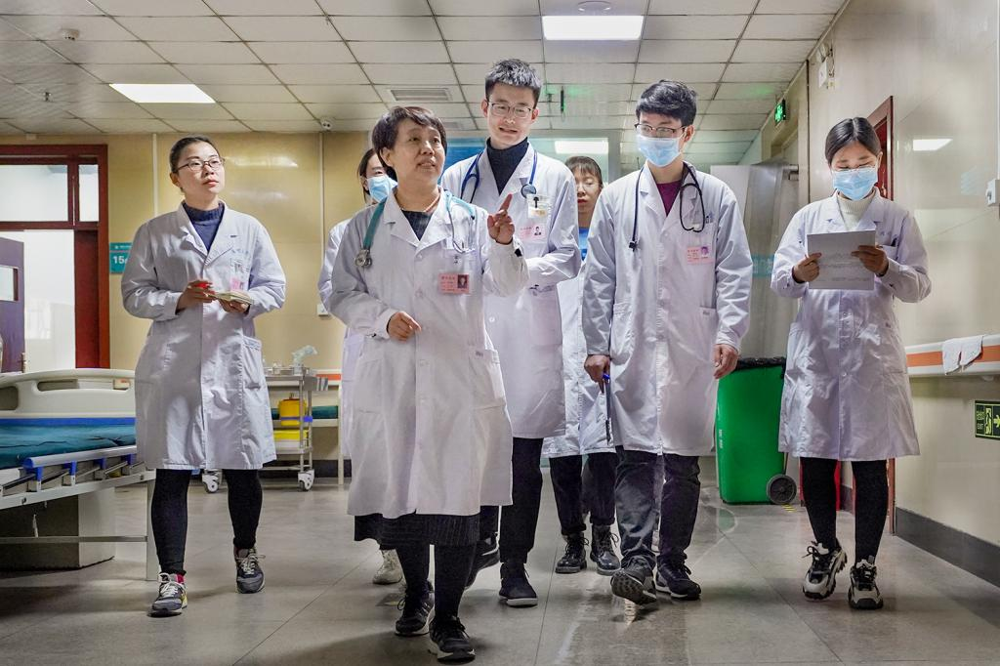
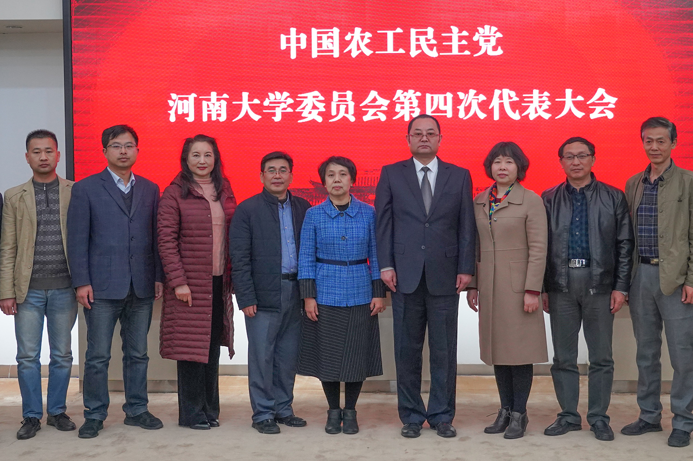

万琪琳：不忘初心，情系桑梓
发布时间：2020-09-04 15:29:30 作者：赵振滔
万琪琳，女，1962年出生，1985年毕业于河南医科大学医学系，教授，硕士生导师，主任医师，河南大学临床医学院老年医学教研中心主任、河南大学淮河医院心内科副主任。河南省医学会老年医学分会副主任委员、河南省中西医结合学会老年分会副主任委员，开封市医学会老年医学会名誉主任委员、开封市医师协会老年医学会主任委员、开封市医学会心血管病专业委员会副主任委员。开封市卫生系统第一届优秀技术人才、第二届心血管专业学科带头人。从事心血管内科临床教学科研工作35年，擅长冠心病、先心病及起搏器安置的介入治疗。著有《心血管疾病现代内科治疗学》一书，在省级以上刊物发表论文80余篇。曾任开封市第八届政协委员，开封市第九届、第十届、第十一届政协常务委员、原农工党河南大学委员会主委，现任农工党开封市委副主委。
默默坚守，不改初心
万琪琳医生与医有缘。她的母亲是一位德高望重的妇产科医生，母亲说，当年怀着她的时候就坚守在工作岗位，为孕妇接生。由此看来，也许万琪琳与医生这一职业的不解情缘是与生俱来，并烙印于身体中每一个细胞的。
万医生告诉记者，在高中时期的一篇作文里，她就有“理想是长大后做一名医生”的愿望。在母亲和同是做医生的舅父影响下，作为恢复高考后第一届高中生的万琪琳毅然报考了临床医学专业，并如愿以偿地成为了一名医学院的大学生。1985年，23岁的她从河南医科大学毕业，怀揣着一颗为家乡父老服务的赤子之心，回到了故土开封，成为了开封医学专科学校淮河医院（河南大学淮河医院的前身）的一名心内科医生。
时光飞逝，一晃35年过去了，万医生依旧坚守在这片故土，坚守着“回家”的初心。这35个春秋，万医生的步伐坚定而扎实，当年名不见经传的小姑娘如今已成长为行业翘楚、知名专家。她大医精诚，救人无数，名满中原。在这三十多年里，她接诊、看病、手术、查房，每天忙忙碌碌，就像一个一刻不停旋转的陀螺，为守护病人的健康与病魔战斗，赢得了病人无数赞誉。但她也因此付出了很多，甚至是自己的健康。临床心血管病治疗工作，离不开放射线介入治疗，心血管介入医生因长年受射线辐射会导致面部黑斑、面色暗淡，甚至头发脱落，有时身上稍有磕碰就会出现大片的紫斑，而且极易引发肿瘤，用业内人士的话说，心血管医生是“用大夫的命换病人的命”。
作为一名从医三十多年的心血管医生，不到60岁的万医生相比同龄人头发更加细短稀疏，一些微黑斑在暗淡的面部也十分明显，这些都是因为长年受放射线辐射影响的结果。为了尽可能减少放射线的辐射影响，心血管医生进行介入手术时必须要穿铅衣，平时每天要做七八台手术，多的时候她一天要做一二十台，一天下来，二十斤重的铅衣长时间罩在她弱小的身躯上，其中滋味可想而知。但就是在这样的环境中，万医生一干就是三十多年，如果没有医者仁心的大爱精神，如果没有救死扶伤的奉献意识，她怎能坚持到今天？
“去年元旦你加班，今年的元旦你又在医院……”，万琪琳的爱人年年都这样“抱怨”，万医生何尝不想回家和家人一起度过这一天，不过节假日上班已经成为她工作的常态。诸如此类的情况不胜枚举: 万医生怀孕期间依旧坚持上夜班，小孩出生之后她带着孩子和保姆一起在医院上夜班……她需要24小时随时待命，夜里被医院的电话铃声吵醒是家常便饭，伴随而来的是长期睡眠困难，黑眼圈也如一团乌云笼罩在眼周无法消散。可是万医生没有别的选择，心血管疾病患者的情况一般都比较凶险，猝死率很高，因此心内科医生必须争分夺秒和死神抢人，他们从来不穿皮鞋，都是穿着运动鞋，万医生跑烂的运动鞋连她自己也不知道有多少双……
曾几何时，万医生也曾一度动摇过，但她始终坚信：“我不做，谁来做；我不奉献，谁来奉献？”正是凭着这种奉献的精神和强大的信念，35年来，她默默坚守在临床治疗最前线，用自己的青春和汗水缓解了无数病人的痛苦，挽救了无数病人的生命，她从未忘记奉献的初心，她一直，一直都记得并坚守着……
甘于奉献， 医者仁心
“万主任对患者充满爱心、工作细心、处处暖心，她是我们的好主任，患者的好医生！”河南大学淮河医院护士长云瑞用这三个心来评价万琪琳主任。的确，在万主任那里，没有什么事情比自己的患者更让她挂心的。金杯银杯不如患者的口碑。万主任把亲人般的爱给了患者，患者给予她“是一位心地善良、敬业奉献、医术高明的好人”的高度评价。面对病人，无论是疾病治疗，还是生活方面，她都尽可能地给予患者关心和帮助，只要病人有需要，哪怕是在半夜，只要一个电话她就马上赶到病人身边，从来不会因为自己年龄大、工作辛苦而抱怨或者推辞，常年如此。万主任神经衰弱、睡眠质量差的病根儿就是这样落下的。
病人从前期的诊断、住院，到后期的观察、治疗，万主任都会一一过问，即使自己再忙，只要在开封，她都要坚持每天到医院查房，每天到病人床前去问问情况，交代几句，直到病人出院，她说：“只到看病人高高兴兴地出院了，自己心里的那块儿石头才能真正落地。”“万老师性格特别特别地好，乐于帮助别人，对病人也特别好，只要是接触过万老师的病人都不愿意去其他地方。”万琪琳的同事——病区行政主任钟晓鸣这样评价她。
医院是一个开放性的场所，万医生每天面对的都是各个层次、不同性格的人，有的人文化水平不高，为了让病人了解病情，配合治疗，一个简单问题她要解释好几遍，她替病人考虑得很多，包括费用医保的事也要耐心给病人解释清楚，在保证治疗效果的前提下，只要能省的钱她绝对不会让病人多花一分钱，因此病人找她看过一次病就再也不想去找其他医生了。
“每次做手术就像过二万五千里长征一样不容易。”的确，虽然心内科介入手术微创成功率高，但由于心血管疾病患者多为中老年人，有的甚至为高龄患者，且心血管疾病发病急、变化快，情况复杂，死亡率高，万主任不但要承担手术本身所带来的风险，而且还要考虑到手术不成功病人家属是否可以接受，因此自己工作时的心理压力非常大。即使在手术没有失误的情况下，患者突然出现变故，万主任照样会感到无比心痛和不安，总会不停地反问自己，怎么才能做得更好，让患者少遭受一些痛苦，让家属少留下一些遗憾。
“作为医者，我们不能辜负病人的信任，我们还得努力，直到病人康复出院。”万主任总是这样说。不负病人的信任，回报一片赤诚，这是她一直以来的准则。
锐意进取，精于科研
必须经历1000例以上单独手术实践才能胜任心内科急诊手术。万老师从事心血管内科临床教学科研工作三十多年来，长期工作在临床一线，有系统的专业理论知识和丰富的临床工作经历，在心血管疾病诊断、治疗和急诊抢救方面经验丰富，医术高超，应对解决疑难复杂病症能力强，是业界公认的专家型老师。正是凭着高尚医德、过硬医术和丰富的临床教学经验，万琪琳先后获得了开封市卫生系统优秀技术人才、学科带头人等多项荣誉称号，担任过中国老年医学学会理事等多个职务。
耀眼的光环背后都是那些不为人知的付出和数不尽的艰辛。心血管内科既有内科的性质，同时又具外科的特点，因此既要查病房，又得给病人做手术。而且，身为女医生，除了要把工作上的事做好，还要照顾家庭，坐诊、教学、开会、科研等等，各种事务塞满了她的日常，一天天，一年年。尽管如此，她从没喊累，也从不叫苦，每一天她总是以最好的状态迎接工作和生活。
医学的发展和医疗临床的特殊性决定了医生是个辛苦的职业，更是一个需要终身学习，须臾不可懈怠的职业。万老师坚持每天都挤时间学习，有时候学习到凌晨一两点，第二天一大早又带着课件到医院上班，不断追踪前沿知识，更新自己的知识库，长年如此，乐此不疲。她说“医学是个未知数最多的领域，所以不但要活到老学到老，更要抓紧时间，争分夺秒。”此外，她还经常外出参加研修活动，学习国外先进技术，拓展视野，交流互进。2011年参加河南省重点学科学术技术带头人培养计划项目（5451工程），远赴美国印第安纳州医疗保险中心医院研修介入心脏病学；2017年8月赴美国参加第一期克利夫兰医学中心心内科研修班，并参加了第18届心脏病学回顾与进展学习班，了解了美国一流医院医疗、经营、医生的培养体制等。
作为河南省医学重点学科淮河医院心血管内科副主任、开封市卫生系统心血管内科专业学科带头人，万琪琳正是凭着她身上那股脚踏实地、不畏劳苦、敢于挑战的韧劲儿，积极带领年轻人开展心内科新技术、新业务攻关活动，使河南大学淮河医院心内科介入治疗水平一步步提高，达到了国内国际先进行列，其所在的心内科1998年、2002年、2006年、2011年、2016年五年被评为河南省临床重点学科。
桃李不言，下自成蹊。万老师除了要做好医疗工作外，还要完成自己的教学任务。万老师的课程非常受学生的欢迎，她总是尽心尽力地结合实例进行教学讲解，课堂生动活跃，许多学生因此慕名报考了她的研究生。在带领学生实习期间，学生不会什么她就教什么，在教材的基础上结合临床实践，指导学生一步一步地进行操作和学习，无论学习方法上还是学习内容上，她都给予学生充分的指导，多次被评为河南大学优秀教师，2015年荣获河南大学教学质量一等奖。
“教授”“硕士生导师”……在教学科研之路上，万琪琳的身份是多变的，但不变的是她脚踏实地、爱生如子、专心医学的大医精诚的医者。
参政议政，无愧于心
“既然在这个位置，就应该发挥好自己的作用，发出自己的一点光芒。”作为一位医疗工作者、农工党员，万琪琳结合自身所从事的专业，围绕地方和政府的中心工作，关注周边百姓的现实生活，以科学务实的精神积极建言献策。万琪琳曾担任开封市第八届政协委员，开封市第九届、第十届、第十一届政协常务委员，现任中国农工民主党开封市委副主委，在此期间，她每年都提交多份提案。2012年1月她在市政协十届三次会议上提出的《关于我市各商业网点销售低碘盐及无碘盐的建议》被市政协评为优秀提案。人口老龄化是一个不容回避的问题，对如何发展养老产业，万主委在2015年10月召开的开封市政协十一届十次常委会议上提出了“要加快建立健全医疗机构与养老机构的协作机制，鼓励部分二级医院转型成为养老康复机构，积极推动开展远程服务和移动医疗服务，努力探索医养结合的新模式，不断完善我市社会养老服务体系。”的建议，受到广泛关注，建议内容被相关部门采纳。
除参政议政之外，万主委还通过积极组织参加各种形式的调研、视察活动来服务社会。在担任农工党河南大学委员会主委期间，她带领党员先后赴新乡七里营乡刘庄村调研村卫生所及医疗保障体系、养老保障及计划生育工作，活动调研报告受到市委统战部的好评；她还曾赴“中国画虎第一村”河南省商丘市民权县北关镇王公庄村，进行社会主义新农村调研活动，并提交调研报告，为新农村建设建言献策；近年来她先后百余次送医下乡，为村民进行义诊及卫生科普知识宣传，给留守儿童进行健康体检和疾病诊治，受到老百姓的广泛好评。
在这次抗击新型冠状病毒疫情期间，作为农工党开封市副主委的万琪琳每天带着年轻大夫奋战在临床一线，积极做好新型冠状病毒防疫科普知识宣传，引导大家正确面对疫情，不信谣，不传谣，配合政府科学防控疫情。
“啥事都往最好的做，付出了、努力了，问心无愧就好。”35年来，万琪琳正是用自己的实际行动践行着她的这一人生信条。